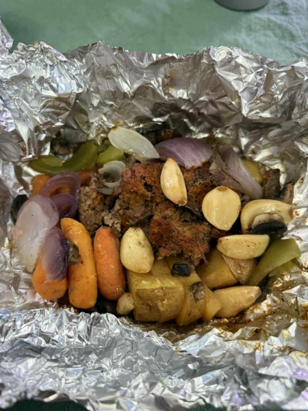

Hobo Foil Pack Meals
Description
A simple, flexible, one-stop-shop dinner that can be made with whatever ingredients you have on hand. Perfect for grilling, camping, or easy cleanup. This meal is endlessly adaptable and always hits the spot!
Core Ingredients
- Ground beef (or substitute with sausage, turkey, or plant-based meat)
- 1 onion, sliced
- 2 cloves garlic, minced
- 2 medium potatoes, thinly sliced
- 2 carrots, sliced
- 1 tablespoon burger bomb seasoning (or your favorite blend)
- 1 poblano pepper, sliced
- 1 cup mushrooms, sliced
- 1 tablespoon butter (per foil pack)
Optional Add-Ins
- Sliced squash or zucchini
- Sweet potatoes
- Cheese (cheddar, mozzarella, pepper jack)
- Bell peppers, jalapeños, or banana peppers
- Any leftover cooked veggies or pantry staples
Instructions
- Lay a large sheet of heavy-duty aluminum foil flat on a clean surface.
- Place a chunk of ground beef (or meat of choice) in the center.
- Season the meat generously with burger bomb seasoning or your preferred blend.
- Add sliced potatoes, carrots, onion, garlic, peppers, mushrooms, and any other veggies or extras you like around or on top of the meat.
- Top everything with a tablespoon of butter.
- Fold the foil tightly to seal it completely, forming a secure packet.
- Place on a grill (or campfire grate) over medium heat and cook for 30–40 minutes until veggies are tender and meat is to temp
- Carefully open foil (watch for steam!) and enjoy right from the pack or plate it up.
Tips
For extra flavor, try adding BBQ sauce, Worcestershire, or a splash of soy sauce before sealing. No grill? You can bake it at 400°F for about 35 minutes instead.